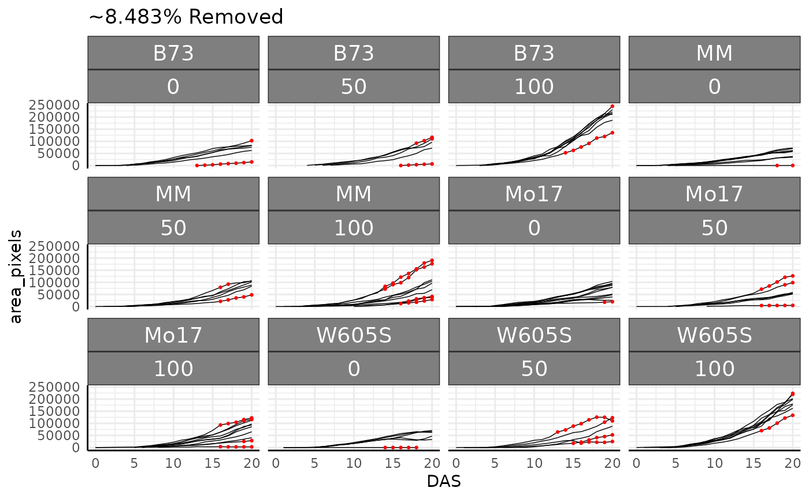
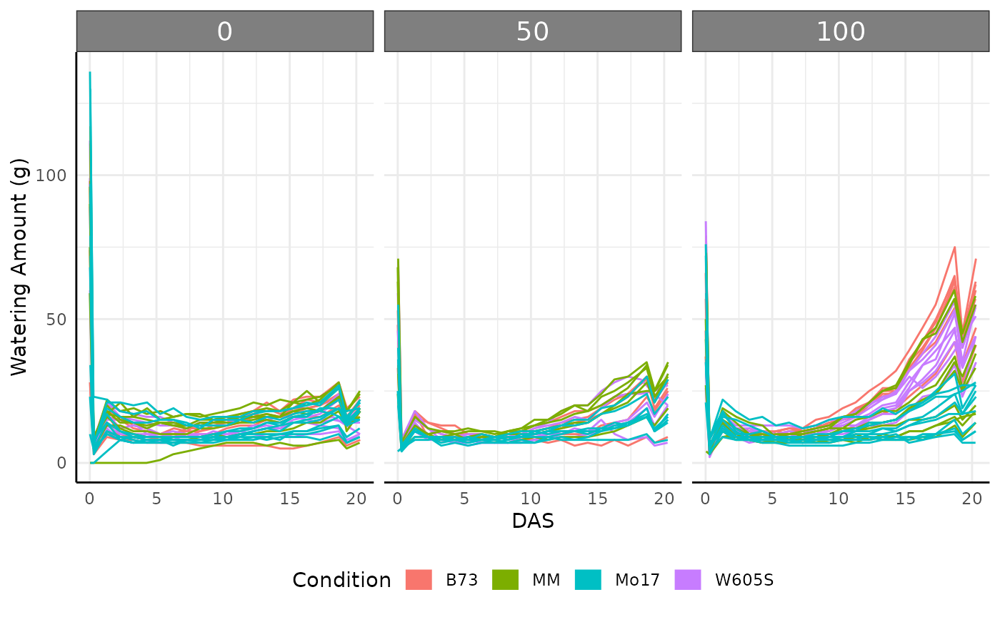
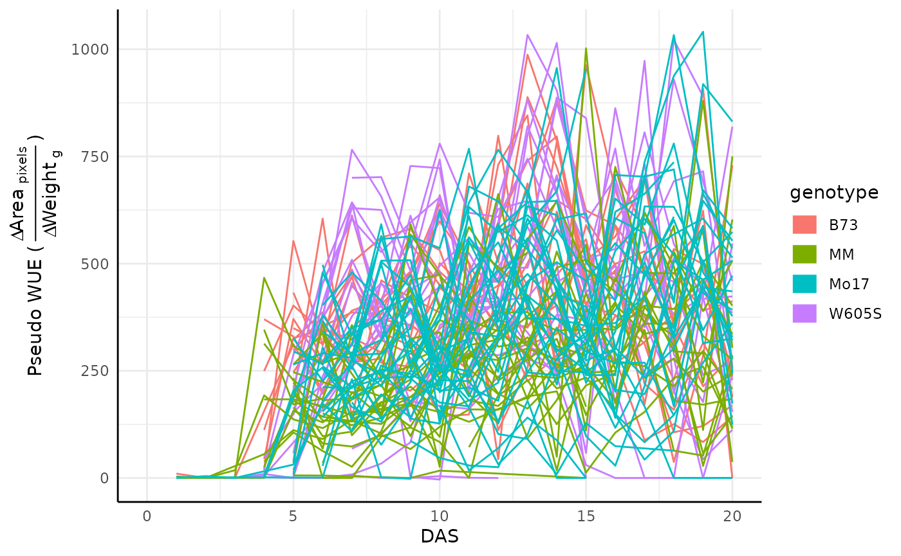

Considerations when using `PlantCV` data in `pcvr`
pcvr v1.1.0.0
Josh Sumner
Source:vignettes/articles/reading_pcv_data.Rmd
reading_pcv_data.RmdExample Bellwether (Lemnatech) Workflow
The Bellwether phenotyping facility at the Donald Danforth Plant Science Center allows for high throughput image based phenotyping of up to 1140 plants over the course of several weeks. This generates a massive amount of image data which is typically analysed using plantCV, a python based image analysis tool developed and maintained by the Data Science Core Facility at DDPSC. The plantCV output from a Bellwether experiment consists of numeric phenotypes commonly broken into two categories, single value traits and multi value traits. Single value traits are phenotypes where one image yields one value, things like plant height or plant area. Multi value traits require multiple numbers to describe a single image and currently are limited to color histograms in various color spaces. Here we will focus only on the hue channel of HSV color, but there are lots of options with your data. This package is being developed to help with common analysis tasks that arise in using plantCV output. If your goal or experiment seems to be unsupported then please consider raising an issue on github so we can know what directions to take development in for the future.
Read In Data
This tutorial just shows some common things to check when reading in
PlantCV output, particularly from lemnatech style
phenotyping experiments.
read.pcv
Bellwether data can be very large so this vignette will use a small
bellwether dataset that is already subset to remove most multi-value
traits (most color histograms). Both the single value data
and multi value
data are available on github. For single value traits being read
into wide format there is not a compelling reason to use
read.pcv in place directly calling fread or
read.csv. The benefits of read.pcv are only
shown if you need to filter data outside of R or if you want to use your
data in a different format than it is stored in (wide going to long and
vice versa).
The single value traits can be read in with read.pcv,
here using data.table::fread for speed.
base_url <- "https://raw.githubusercontent.com/joshqsumner/pcvrTestData/main/"
base_url2 <- "https://media.githubusercontent.com/media/joshqsumner/pcvrTestData/main/"
sv <- read.pcv(
filepath = paste0(base_url, "pcv4-single-value-traits.csv"),
reader = "fread"
)You will generally want to join some metadata to your phenotypes or parse metadata from your barcodes. Metadata key files will generally look and be used like this:
## barcode genotype fertilizer
## 1 Em004ZDB130826 MM 50
## 2 Em002ZDC130783 B73 0
## 3 Em002ZDC130771 B73 0
## 4 Em005ZDC130867 Mo17 0
## 5 Em005ZDA130872 Mo17 100
## 6 Em005ZDC130864 Mo17 0##
## 0 50 100
## B73 193 133 241
## MM 255 208 292
## Mo17 364 221 304
## W605S 182 168 263If we did not have a key file then we would parse our barcodes doing something like this:
genotype <- substr(sv$barcode, 3, 5)
genotype <- ifelse(genotype == "002", "B73",
ifelse(genotype == "003", "W605S",
ifelse(genotype == "004", "MM", "Mo17")
)
)
fertilizer <- substr(sv$barcode, 8, 8)
fertilizer <- ifelse(fertilizer == "A", 100,
ifelse(fertilizer == "B", 50, 0)
)
table(genotype, fertilizer)## fertilizer
## genotype 0 50 100
## B73 193 133 241
## MM 255 208 292
## Mo17 364 221 304
## W605S 182 168 263Here we’ll also convert some of the phenotypes from pixel units to meaningful units. Here we know that the chips on our color card are 1.2cm on each side, so we can use the following conversion. You can convert these phenotypes to whatever units you like, but you need to know the size of the color card chips in some real unit and color correct in plantCV so that the color chip measurements are returned.
Very large datasets
Sometimes large plantCV output may be too large to be read into
memory for R. In that case read.pcv has a
filter argument which will filter rows using awk through
linux/unix outside of R. That feature would work as shown below to read
only single value traits into memory. This can take a few minutes but
allows the entirely workflow to be documented in one R file.
read.pcv.4.x
Before the release of PlantCV version 4 there were several widely
used branches of PlantCV that output results as a single long format csv
file. The original goal of read.pcv was to make it easier
to work with those files. Now that the default output has changed the
read.pcv function has been somewhat simplified but it can
still be used for these “PlantCV 4.x” legacy style data.
sv <- read.pcv(paste0(base_url2, "smallPhenotyperRun.csv"),
mode = "wide",
reader = "fread"
)
if (TRUE) { # we can parse barcodes for the metadata that we need
sv$genotype <- substr(sv$barcode, 3, 5)
sv$genotype <- ifelse(sv$genotype == "002", "B73",
ifelse(sv$genotype == "003", "W605S",
ifelse(sv$genotype == "004", "MM", "Mo17")
)
)
sv$fertilizer <- substr(sv$barcode, 8, 8)
sv$fertilizer <- ifelse(sv$fertilizer == "A", "100",
ifelse(sv$fertilizer == "B", "50", "0")
)
} else { # or we might use a key file and join it to our data
key <- read.csv(paste0(base_url, "smallPhenotyperRun_key.csv"))
sv <- merge(sv, key, by = "barcode")
}
read.pcv.3
Legacy Bellwether data (plantCV version 3 output) can also be read in
with read.pcv.3 which is a wrapper around
read.pcv which attempts to do several common tasks related
bellwether data joining internally. This should be considered
experimental as it is based on plantCV version 3 and earlier
outputs/bellwether experiments can take many formats and this has only
been considered with a few datasets. With the older plantCV output the
data is already in a wider format so here the default mode is “long”.
Note that while read.pcv works fine with this older data
and still has some added benefits the reasons to use it in place of
data.table::fread or base::read.csv are less
compelling.
Here we have examples of reading in various amounts of plantCV 3 bellwether data. In the final example we also list a conversion to take area from pixels to for the 5MP camera that was used prior to 2023. Note that the conversion would change for a different camera such as the current 18MP camera. It is a good idea to check your color chip sizes if you are not sure about the appropriate conversion.
onlyPhenos <- read.pcv.3(file = paste0(base_url, "pcv3Phenos.csv"), metaCol = NULL)
colnames(onlyPhenos)
phenosAndMeta <- read.pcv.3(
file = paste0(base_url, "pcv3Phenos.csv"), metaCol = "meta",
metaForm = "vis_view_angle_zoom_horizontal_gain_exposure_v_new_n_rep",
joinSnapshot = "id"
)
colnames(phenosAndMeta)
all <- read.pcv.3(
file = paste0(base_url, "pcv3Phenos.csv"),
snapshotFile = paste0(base_url, "pcv3Snapshot.csv"),
designFile = paste0(base_url, "pcv3Design.csv"),
metaCol = "meta", metaForm = "vis_view_angle_zoom_horizontal_gain_exposure_v_new_n_rep",
joinSnapshot = "id", conversions = list(area = 13.2 * 3.7 / 46856)
)
colnames(all)Other metadata
Often we want to convert our timestamp data from the lemnatech into
either days after start (DAS), days after planting (DAP), or days after
emergence (DAE). By default the pcv.time function will add
columns called DAS, DAP, and DAE to your data. Days after emergence
requires using a phenotype and a value to classify emergence. Here an
area greater than 10 pixels is considered an emerged plant. In this
example with a planting delay of 0 DAP and DAE will be the same, but
both are still created for the purpose of the example.
out <- pcv.time(sv,
plantingDelay = 0, phenotype = "area_pixels", cutoff = 10,
timeCol = "timestamp", group = c("barcode", "rotation"), plot = TRUE
)
out$plot## [[1]]##
## [[2]]##
## [[3]]
sv <- out$data
dim(sv)## [1] 2824 52Note that in these plots, and particularly clearly in the DAE plot, there are lots of plants which show a vertical line on their last day, indicating that our grouping might be incorrect. For this data that is due to the imaging schedule changing and getting 2 separate images at each rotation on the last day.
Before moving on we’ll also check the grouping in our data. Here we see that we have lots of plants with more than one image per day.
checkGroups(sv, c("DAS", "barcode", "rotation", "genotype", "fertilizer"))## Grouping is uniqueWe can combine images taken at different angles of the same plant on
a given day with aggregate, where we will also remove some
columns we aren’t using. In this case we use the mean of observations,
but some people prefer a sum. Either way is fine. Here we also remove
the DAE and DAP columns since we will not be using them.
phenotypes <- colnames(sv)[c(19:35, 43:45, 48:49)]
phenoForm <- paste0("cbind(", paste0(phenotypes, collapse = ", "), ")")
groupForm <- "DAS+timestamp+barcode+genotype+fertilizer"
form <- as.formula(paste0(phenoForm, "~", groupForm))
sv_ag_with_outliers <- aggregate(form, data = sv, mean, na.rm = TRUE)
dim(sv_ag_with_outliers)## [1] 1450 27Outlier Removal
The pcv.outliers function can be used to remove outliers
relative to a phenotype using cook’s distance. Here due to the
experimental design having these plants germinate on the machine around
1 percent of data are removed as outliers. The plot shows removed data
points in red, although here that is hard to see.
out <- pcv.outliers(
df = sv_ag_with_outliers, phenotype = "area_pixels",
group = c("DAS", "genotype", "fertilizer"), plotgroup = c("barcode")
)## Warning in pcv.outliers(df = sv_ag_with_outliers, phenotype = "area_pixels", :
## 16 groupings had all observations removed
sv_ag <- out$data
out$plot
dim(sv_ag)## [1] 1327 27It is also useful to check our grouping assumptions again, here we see that there are some plants with multiple images from a single day.
checkGroups(sv_ag, c("DAS", "barcode", "genotype", "fertilizer"))## Grouping is uniqueWatering Data
We might also want to check the watering data, which can be read
easily from json with pcv.water.
## Using the first watering time, 2023-04-13 23:28:17.58, as beginning of experiment to assign DAS
water$genotype <- substr(water$barcode, 3, 5)
water$genotype <- ifelse(water$genotype == "002", "B73",
ifelse(water$genotype == "003", "W605S",
ifelse(water$genotype == "004", "MM", "Mo17")
)
)
water$fertilizer <- substr(water$barcode, 8, 8)
water$fertilizer <- ifelse(water$fertilizer == "A", "100",
ifelse(water$fertilizer == "B", "50", "0")
)
ggplot(water[water$weight_after != -1, ], aes(
x = DAS,
y = water_amount, group = barcode, color = genotype
)) +
facet_wrap(~ factor(fertilizer, levels = c("0", "50", "100"))) +
geom_line() +
pcv_theme() +
guides(color = guide_legend(title = "Condition", override.aes = list(linewidth = 5))) +
labs(y = "Watering Amount (g)") +
theme(legend.position = "bottom")
A common use for watering data is to look at water use efficiency (WUE). Here we can calculate an approximation of WUE based on the change in some phenotype (area) over the change in weight between waterings. Note that the plants in this example are very young and as such the data in this example is dominated by noise.
test <- pwue(df = sv_ag, w = water, pheno = "area_pixels", time = "timestamp", id = "barcode")
ggplot(test, aes(x = DAS, y = pWUE, color = genotype, group = barcode)) +
geom_line() +
guides(color = guide_legend(override.aes = list(linewidth = 5))) +
labs(y = expression("Pseudo WUE (" ~ frac(
Delta ~ textstyle("Area")[" pixels"],
Delta ~ textstyle("Weight")[" g"]
) ~ ")")) +
pcv_theme()## Warning: Removed 86 rows containing missing values or values outside the scale range
## (`geom_line()`).
Multi Value Traits
We take similar steps in working with multi-value trait data.
hue_wide <- read.pcv(paste0(base_url2, "pcv4-multi-value-traits.csv"),
mode = "wide", reader = "fread"
)
hue_wide$genotype <- substr(hue_wide$barcode, 3, 5)
hue_wide$genotype <- ifelse(hue_wide$genotype == "002", "B73",
ifelse(hue_wide$genotype == "003", "W605S",
ifelse(hue_wide$genotype == "004", "MM", "Mo17")
)
)
hue_wide$fertilizer <- substr(hue_wide$barcode, 8, 8)
hue_wide$fertilizer <- ifelse(hue_wide$fertilizer == "A", "100",
ifelse(hue_wide$fertilizer == "B", "50", "0")
)
hue_wide <- pcv.time(hue_wide, timeCol = "timestamp", group = "barcode", plot = FALSE)
phenotypes <- colnames(hue_wide)[grepl("hue_frequencies", colnames(hue_wide))]
phenoForm <- paste0("cbind(", paste0(phenotypes, collapse = ", "), ")")
groupForm <- "DAS+barcode+genotype+fertilizer"
form <- as.formula(paste0(phenoForm, "~", groupForm))
hue_wide <- aggregate(form, data = hue_wide, mean, na.rm = TRUE)Conclusion
These data can be used in the same way as the simulated data in the
Bellwether vignette. The Bellwether vignette originally used these data,
but for compatibility with CRAN standards now uses lighter
simulated data rather than data hosted online. See that or other
vignettes/articles for notes about analysis.